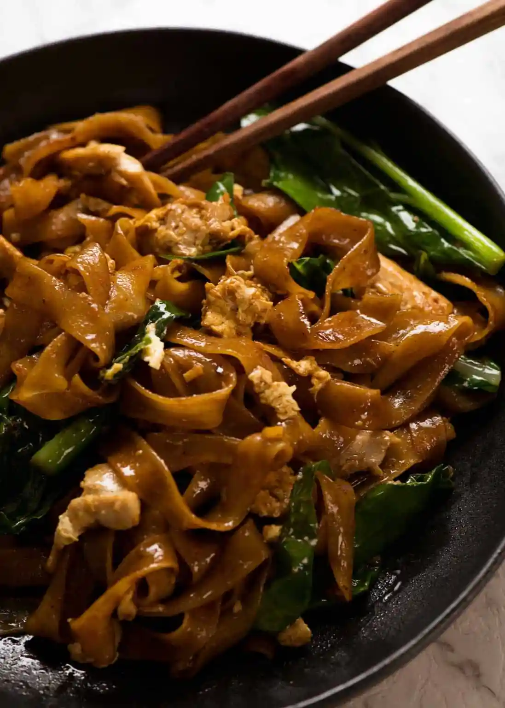

Pad See Ew

Description
Pad See Ew – the popular Thai stir fried noodles straight
from the streets of Thailand made at home! While Pad Thai
is sweeter and nuttier, Pad See Ew is salty, balanced
with a touch of sour and a wonderful chargrilled flavour
which you can create at home!
Ingredients
- 200g dried wide rice stick noodles
- 2 tbsp dark soy sauce
- 2 tbsp oyster sauce
- 2 tsp soy sauce
- 2 tsp sugar
- 2 tbsp water
- 3 tbsp peanut or vegetable oil
- 2 cloves garlic cloves
- 1 cup / 150g / 5oz chicken thighs
- 1 large egg
- 4 stems Chinese broccoli
Steps
- Heat oil: Heat 1 tbsp oil in a very large heavy based skillet or wok over high heat.
- Cook garlic and chicken: Add garlic, cook 15 seconds. Add chicken, cook until it mostly changes from pink to white.
- Chinese broccoli STEMS: Add Chinese broccoli stems, cook until chicken is almost cooked through.
- Chinese broccoli LEAVES: Add Chinese broccoli leaves, cook until just wilted.
- Scramble egg: Push everything to one side, crack egg in and scramble.
- REMOVE chicken from wok: Remove everything in the wok onto a plate (scrape wok clean).
- Caramelise noodles: Return wok to stove, heat 2 tbsp oil over high heat until it starts smoking (HOT is key!). Add noodles and Sauce. Toss as few times as possible to disperse Sauce and make edges of noodles caramelise – about 1 to 1 1/2 minutes.
- Add chicken back in: Quickly add chicken and veg back in, and toss to disperse. Serve immediately!